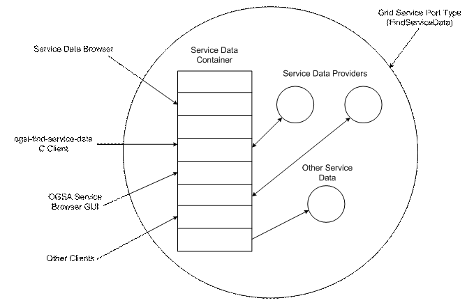

In the Open Grid Service Architecture (OGSA) on which the Globus Toolkit® Version 3.0 (GT3) is based, everything is represented as a Grid service. These Grid services can be a static set of persistent services as well as transient services such as a query against a database, a data mining operation, a network bandwidth allocation, a running data transfer, and an advance reservation for processing capability. There may be one or more instances of a particular Grid service. Each Grid service instance has a set of service data associated with it, and this data is represented in a standardized way as Service Data Elements (SDEs).
Service Data Provider components implement a standard mechanism for dynamic generation of Service Data Elements. GT3 includes a set of core Service Data Providers as well as the capability for you to create your own Service Data Providers.
The purpose of this document is to describe how you can create new Service Data Providers to suit the needs of your particular organization and computing environment.
The following GT3 documents should be read as prerequisites to creating your own Service Data Providers:
This document is intended primarily for developers who want to extend the Information Services in their GT3 configuration. A knowledge of OGSA and Grid concepts, particularly as described in The Physiology of the Grid, is presumed, as is a working knowledge of Java.
This document assumes that the Globus Toolkit 3.0 has been installed and configured for your particular computing environment.
This document contains the following sections:
The Information Services component of the Globus Toolkit provides information about Grid resources for use in resource discovery, selection, and optimization. This information is critical to the operation of the Grid and construction of applications.
Information Services provides the functionality within which Service Data Elements can be collected, aggregated, and queried; data feeds can be monitored; and Service Data Elements can be created dynamically on demand.
Specifically, GT3 Information Services is a modular Java component framework for OGSA that service developers can use to implement various information management solutions for GT3-compatible OGSA services. This framework allows for the creation of a set of classes and class-like components for “everyday” information management tasks.
Service Data Providers gather and generate data for use by Grid service instances. The data generated is in the form of XML objects, which become the value of a Service Data Element.
Service Data Provider components consist of the ServiceDataProviderManager Java class and one or more “plug-in” ServiceDataProvider classes, which are regularly executed by the Service Data Provider Manager (using Java TimerTasks).
These provider plug-in programs can be the supplied providers that are part of GT3 or user-created, custom providers.
A valid provider is composed of any Java class that implements one or more of the Information Services ServiceDataProvider Java Interfaces and generates an XML document as the output of its execution. (See the next section for more details.)
This section defines and describes basic functionality of core and user-created Service Data Providers.
In essence, a Service Data Provider collects data, assembles an XML document from the data, and then emits the XML document as either a Java output stream or a memory-bound Java DOM (Document Object Model) representation.
Specifically, a Service Data Provider is defined as any Java class that
implements at least one of three predefined Java interfaces (SimpleDataProvider,
DOMDataProvider, and AsyncDataProvider; see
Provider Interfaces below), and generates a well-formed,
compatible XML document as the output of its execution.
“Well-formed” above means that the XML document can be parsed in any
environment, i.e., any parsing tools written in any programming language
can be used. “Compatible” above means a form compatible with the
Service Data Provider Manager, i.e., a Java output stream or DOM
representation.
GT3 supplies the following Service Data Providers:
SimpleSystemInformationProvider: A Java-based host information data
provider that produces the following types of data: CPU count, memory
statistics, OS type, and logical disk volumes.
HostScriptProvider: A set of shell scripts for Unix systems that output
various types of detailed host resource information. These scripts are
basically the same scripts as the MDS2 information providers, ported to
output XML rather than LDIF, and they provide basically the same
information as the MDS2 information providers.
AsyncDocumentProvider: A utility provider that uses the
AsyncDataProvider interface to periodically read an XML document from
disk. It can be useful for simulations or cases where the provider
developer does not have a software interface to the component generating
the data. This provider works with any type of XML data.
ScriptExecutionProvider: A utility provider that provides a simple wrapper for the execution of another program (typically a shell script) that generates the XML document data on its standard output stream.
Service Data Providers can be as simple or as complicated as the situation requires. The baseline case requires only that the provider developer create a Java class implementing the functions of one interface – SimpleDataProvider – whose purpose is to produce XML output in the form of a Java OutputStream as the result of its execution.
The following steps are the essence of creating a new Service Data Provider:
Choose the provider interface to be implemented, based on application needs or constraints.
Write code to produce your dataset as an XML document. This can either be in an OS-specific external program, or native Java code that is executed by the provider class itself.
Create an entry for the service in which you intend to run the
provider in your auxiliary service configuration file. This service is
assumed to have incorporated the functionality of the Service Data Provider Manager, which parses the provider configuration file
property specified in the service’s deployment descriptor entry (in the
default server configuration file, server.config.wsdd), loads the
provider, and executes it according to parameters specified by a client
service. See
Service Data Provider Manager later in this document for more
details. Also see the
GT3 Index Service User’s Guide for examples.
This section illustrates Service Data Provider operation and describes provider interfaces, the Service Data Provider Manager, and custom data handlers.
The following diagram presents an overview of Service Data Provider operation:

The Service Data Provider interfaces are designed to support execution in either a synchronous (“pull”) mode or asynchronous (“push”) mode. It is up to the developer to choose the appropriate provider interface to implement, based on specific application needs.
There are three provider interfaces: SimpleDataProvider, XMLDataProvider, and AsyncDataProvider. These are described below.
This is a synchronous provider that produces XML output in the form of a Java OutputStream. The SimpleDataProvider is the basic interface that all Service Data Providers must implement, as follows:
public interface SimpleDataProvider
{
// Returns the display name of the provider.
String getName();
// Returns a description of the provider's
functionality.
String getDescription();
// If the provider has a set of default arguments,
// they can be retrieved with this function.
String getDefaultArgs();
// The provider should return a string representation
// of the current error, if any.
String getErrorString();
// Triggers the execution of the provider in order
// to update the provider's internal state,
// sending the output to the specified OutputStream.
void run(String args, java.io.OutputStream outStream) throws
Exception;
}
This is a synchronous extension of SimpleDataProvider that can also produce XML output in the form of a Java org.w3c.dom document. The DOMDataProvider is the interface for XML Service Data Providers that are capable of emitting this Java document object at run time, as follows:
public
interface DOMDataProvider extends SimpleDataProvider
{
public org.w3c.dom.Document run(String args) throws Exception;
}
This is an asynchronous version of SimpleDataProvider that allows for “push” mode delivery of data. To use this interface, the name of a callback function must be specified to the run method, along with a valid ServiceDataProviderDocumentCallback object. The context parameter is for the caller’s use, so that state information or object references can be passed between the calling thread and the callback thread. This provider is as follows:
public interface AsyncDataProvider extends
SimpleDataProvider
{
// Triggers the asynchronous execution of the provider,
// which will call the callbackName method on the specified
// ServiceDataProviderDocumentCallback object.
// Context is defined by the calling thread.
void run(String args,
String callbackName,
ServiceDataProviderDocumentCallback callback,
Object context) throws Exception;
// Signals the
provider to shut down, cease data callbacks,
// and free any associated resources.
void terminate() throws Exception;
// Retrieve the
current state
int getState();
// provider states
public static final int PROVIDER_IDLE = 0;
public static final int PROVIDER_RUNNING = 1;
public static final int PROVIDER_ERROR = -1;
public static final int PROVIDER_TERMINATED = -2;
}
public interface ServiceDataProviderDocumentCallback
{
public Class[] getCallbackParamSig(String methodName);
public String getDefaultCallbackMethodName();
}
Input to Service Data Provider execution is specified via a set of string arguments to the run method. The argument string that gets passed to the provider is the serviceDataProviderArgs member of the ServiceDataProviderExecutionType structure that is passed to the executeProvider port type method. The getDefaultArgs method may be used to retrieve a default argument list for the provider.
For Service Data Provider input, the following is an example of an XML serialized form of parameters to executeProvider:
<provider-exec:ServiceDataProviderExecution>
<provider-exec:serviceDataProviderName>ForkInformation</provider-
exec:serviceDataProviderName>
<provider-
exec:serviceDataProviderImpl>org.globus.ogsa.impl.base.providers.servicedata.impl.
ScriptExecutionProvider</provider-exec:serviceDataProviderImpl>
<provider-exec:serviceDataProviderArgs>./etc/globus-gram-fork-provider</provider-
exec:serviceDataProviderArgs>
<provider-exec:serviceDataName>ForkInformation</provider-exec:serviceDataName>
<provider-exec:refreshFrequency>30</provider-exec:refreshFrequency>
<provider-exec:async>false</provider-exec:async>
</provider-exec:ServiceDataProviderExecution>
The output of a Service Data Provider is XML – either in the form of a Java OutputStream or a Java org.w3c.dom document. This output becomes the value of a Service Data Element and hence available as part of the hosting service’s Service Data Elements. These Service Data Elements can then be used for the various GT3 Information Services functions.
For example, the following is the XML result produced by the execution of the Simple System Information Provider:
<?xml
version="1.0" encoding="UTF-8"?>
<mds:Host xmlns:mds="http://glue.base.ogsa.globus.org/ce/1.1" xmlns:ogsi="http://www.gridforum.org/namespaces/2003/03/OGSI"
ogsi:goodFrom="2003-06-26T02:57:26.296Z" ogsi:goodUntil="2003-06-26T03:17:26.296Z"
ogsi:availableUntil="2003-06-26T03:17:26.296Z" mds:Name="localhost"
mds:UniqueID="localhost" xmlns:xsi="http://www.w3.org/2001/XMLSchema-instance"
xsi:type="mds:HostType">
<mds:OperatingSystem ogsi:goodFrom="2003-06-26T02:57:26.375Z"
ogsi:goodUntil="2003-06-26T03:17:26.375Z" ogsi:availableUntil="2003-06-26T03:17:26.375Z"
mds:Name="Windows XP" mds:Version="5.1" mds:Architecture="x86" />
<mds:Processor ogsi:goodFrom="2003-06-26T02:57:26.375Z" ogsi:goodUntil="2003-06-26T03:17:26.375Z"
ogsi:availableUntil="2003-06-26T03:17:26.375Z" />
<mds:MainMemory ogsi:goodFrom="2003-06-26T02:57:26.375Z" ogsi:goodUntil="2003-06-26T03:17:26.375Z"
ogsi:availableUntil="2003-06-26T03:17:26.375Z" mds:RAMSize="2031616"
mds:RAMAvailable="574768" mds:VirtualSize="2031616" mds:VirtualAvailable="574768"
/>
<mds:FileSystem ogsi:goodFrom="2003-06-26T02:57:28.968Z" ogsi:goodUntil="2003-06-26T03:17:28.968Z"
ogsi:availableUntil="2003-06-26T03:17:28.968Z" mds:Name="A:\" />
<mds:FileSystem ogsi:goodFrom="2003-06-26T02:57:28.968Z" ogsi:goodUntil="2003-06-26T03:17:28.968Z"
ogsi:availableUntil="2003-06-26T03:17:28.968Z" mds:Name="C:\" />
<mds:FileSystem ogsi:goodFrom="2003-06-26T02:57:28.968Z" ogsi:goodUntil="2003-06-26T03:17:28.968Z"
ogsi:availableUntil="2003-06-26T03:17:28.968Z" mds:Name="D:\" />
<mds:FileSystem ogsi:goodFrom="2003-06-26T02:57:28.968Z" ogsi:goodUntil="2003-06-26T03:17:28.968Z"
ogsi:availableUntil="2003-06-26T03:17:28.968Z" mds:Name="E:\" />
<mds:FileSystem ogsi:goodFrom="2003-06-26T02:57:28.968Z" ogsi:goodUntil="2003-06-26T03:17:28.968Z"
ogsi:availableUntil="2003-06-26T03:17:28.968Z" mds:Name="F:\" />
</mds:Host>
This section describes how the Service Data Provider Manager, the Service Data Provider Execution Port Type, and custom data handlers are used to enable a provider program.
Service Data Provider execution is handled by the ServiceDataProviderManager class, which schedules and manages provider execution using Java TimerTasks.
The Service Data Provider Manager uses an auxiliary service configuration file to load and link installed Service Data Providers during runtime through standard Java reflection methods, as follows:
<?xml
version="1.0" encoding="UTF-8" ?>
<serviceConfiguration
xmlns:ogsi=http://www.gridforum.org/namespaces/2003/03/OGSI
xmlns:aggregator=http://www.globus.org/namespaces/2003/04/service_data_aggregator
xmlns:provider-
exec=http://www.globus.org/namespaces/2003/04/service_data_provider_execution
xmlns:xsd="http://www.w3.org/2001/XMLSchema">
<installedProviders>
<providerEntry
class="org.globus.ogsa.impl.base.providers.servicedata.impl.
SimpleSystemInformationProvider"
/>
<providerEntry
class="org.globus.ogsa.impl.base.providers.servicedata.impl.
AsyncDocumentProvider"
/>
<providerEntry
class="org.globus.ogsa.impl.base.providers.servicedata.impl.
ScriptExecutionProvider"
/>
<providerEntry
class="org.globus.ogsa.impl.base.providers.servicedata.impl.
HostScriptProvider"
/>
</installedProviders>
</serviceConfiguration>
To enable your provider for execution by the Service Data Provider Manager and to publish the existence of your provider to clients, you must include a configuration entry for the provider in the auxiliary service configuration file read by the Service Data Provider Manager.
The one required attribute in the configuration entry is the class attribute, which is simply the fully qualified Java class name. For example:
<provider class="org.globus.ogsa.impl.base.providers.servicedata.impl.HostScriptProvider“/>
A service that incorporates the ServiceDataProviderManager class can specify the location of this configuration by setting the serviceConfig property specified in that service’s deployment descriptor entry (in the default server configuration file, server.config.wsdd). For example, the Index Service, which uses the Service Data Provider Manager to execute Service Data Providers, uses the following entry in its server-config.wsdd deployment descriptor to indicate the location of the auxiliary service configuration file:
<parameter name="serviceConfig" value="etc/index-service-config.xml"/>
The Service Data Provider Execution Port Type is composed of two operations, enumProviders and executeProvider, both of which are implemented by the ServiceDataProviderManager class. Both of these methods use XML-serializable Java bean structures to encapsulate parameter lists and return values: these are the ServiceDataProviderEnumType and the ServiceDataProviderExecutionType, respectively.
The enumProviders method produces a list of executable providers that a client is able to invoke on the target service.
The enumProviders method returns provider information in the ServiceDataProviderEnumType structure as follows:
<xsd:complexType name="ServiceDataProviderType">
<xsd:sequence>
<xsd:element name="providerName" type="xsd:string" />
<xsd:element name="providerDesc" type="xsd:string" />
<xsd:element name="providerImpl" type="xsd:string" />
<xsd:element name="providerArgs" type="xsd:string" />
<xsd:element name="async" type="xsd:boolean" />
</xsd:sequence>
</xsd:complexType>
The
enumProviders
method takes a Boolean argument as input and as output, and produces an
array of
ServiceDataProviderEnumTypesrepresented by an XML element as its
result, as follows:
<xsd:complexType name="ServiceDataProvidersElement">
<xsd:sequence>
<xsd:element name="ServiceDataProviders"
type="tns:ServiceDataProviderEnumType"
minOccurs="0" maxOccurs="unbounded" />
</xsd:sequence>
</xsd:complexType>
<xsd:element
name="enumProviders" type="xsd:boolean"/>
<xsd:element name="enumProvidersResponse" type="tns:ServiceDataProvidersElement"/>
The only parameter to the enumProviders method is the rescanConfig variable, a Boolean value that indicates that a rescan of its configuration should be done as a precondition. This will effectively cause the Service Data Provider Manager to reprocess the auxiliary service configuration file and attempt to locate and load any providers in the current classpath that have a corresponding entry in that configuration file.
The executeProvider method takes the ServiceDataProviderExecutionType as its argument, and produces no return value (an exception is thrown on errors), as follows:
<xsd:complexType
name="ServiceDataProviderExecutionType">
<xsd:sequence>
<xsd:element name="serviceDataProviderName" type="xsd:string" />
<xsd:element name="serviceDataProviderImpl" type="xsd:string" />
<xsd:element name="serviceDataProviderArgs" type="xsd:string" />
<xsd:element name="serviceDataName" type="xsd:QName" />
<xsd:element name="refreshFrequency" type="xsd:int" />
<xsd:element name="async" type="xsd:boolean" />
</xsd:sequence>
</xsd:complexType>
<xsd:complexType
name="ServiceDataProviderExecutionElement">
<xsd:sequence>
<xsd:element name="ServiceDataProviderExecution"
type="tns:ServiceDataProviderExecutionType"/>
</xsd:sequence>
</xsd:complexType>
<xsd:element
name="executeProvider" type="tns:ServiceDataProviderExecutionElement"/>
<xsd:element name="executeProviderResponse"/>
The ServiceDataProviderExecutionType parameters are defined as follows:
serviceDataProviderName (string):
Is the display name of the Service Data Provider to execute.
serviceDataProviderImpl (string):
Is the fully qualified Java class name of the provider implementation to use. This parameter cannot be overridden, and must be the same as the providerImpl parameter of the ServiceDataEnumType for the provider entry that matches the serviceDataProviderName parameter in the ServiceDataProviderExecutionType structure.
serviceDataProviderArgs (string):
Are the arguments to pass to the provider at runtime, depending on the provider implementation.
serviceDataName (QName):
Is the XML Qualified Name for the new Service Data Elements that will be created from the output of the provider. Note: This parameter may not be honored if a custom callback handler is used to process the result data.
refreshFrequency (integer):
Is the refresh frequency, in seconds, with which the provider will be executed.
async (Boolean):
Specifies that the provider should run asynchronously, if it is capable of doing so. The async member of the ServiceDataProviderEnumType indicates whether asynchronous operation is available for the selected provider.
The default data processing behavior of the Service Data Provider Manager is to take the logical XML document result of a provider’s execution, create a new Service Data Element based on the data, and then add this Service Data Element to the service’s Service Data.
However, it is possible to override the default data processing logic in the Service Data Provider Manager by specifying the name of a custom callback handler in the provider’s auxiliary service configuration file. This is done by adding an attribute named handler to the providerEntry element in the configuration file. For example:
<providerEntry
class="org.globus.ogsa.impl.base.providers.servicedata.impl.PBSInfoProvider"
handler="jobDataHandler"/>
If a handler attribute is present in a providerEntry configuration element, then once the provider has executed successfully, the Service Data ProviderManager will attempt to invoke the custom handler method specified in the auxiliary service configuration file rather than its own default callback handler.
A custom callback routine allows the developer complete control when handling provider output data, providing a mechanism for facilitating sorting, merging, or other data preprocessing and transformation.
This mechanism can be useful for situations in which the developer does not have any control over provider execution code or the provider’s XML structural format, and/or some additional results processing is required.
Note: Depending on how custom callback handlers are implemented, the
serviceDataName
parameter of the
ServiceDataProviderExecutionType
may or may not be used as the
name of the new service data. This choice is left to the developer.
For example, GRAM RIPS uses a custom callback handler for the PBS, LSF, and Condor providers to search, sort and atomize child “Job” elements from the logical result document into new individual SDEs.
Queries are handled through the host service’s GridServicePortType findServiceData operation. By default, the name of the service data for which to query is what is specified by QName as the serviceDataName field of the ServiceDataProviderExecutionType structure passed to the executeProvider method when the provider is first invoked.
Caveat: If configured with a custom callback handler, the serviceDataName QName may not be honored, subject to the code logic in the callback handler. Based on how the custom callback handler is implemented, it may not be necessary to specify the serviceDataName.
For more details on queries, refer to Querying Service Data.